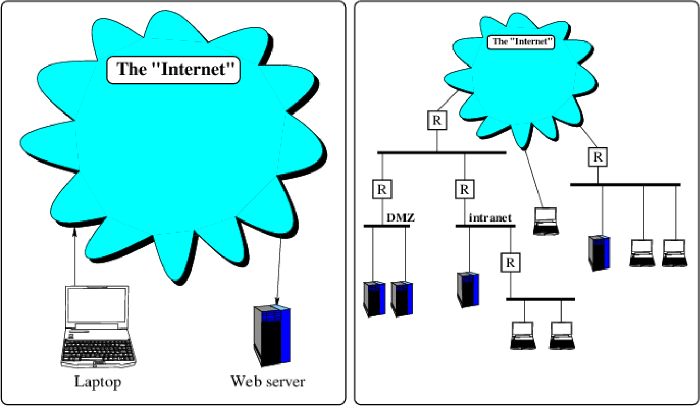
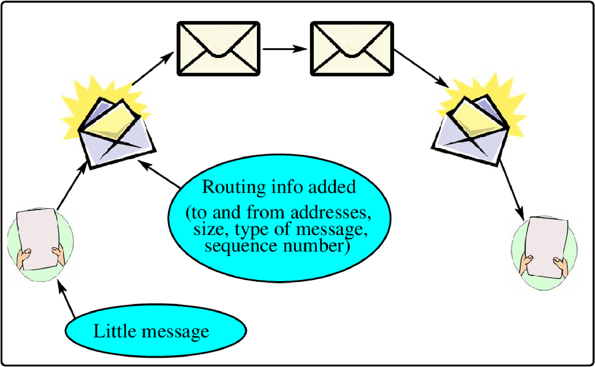
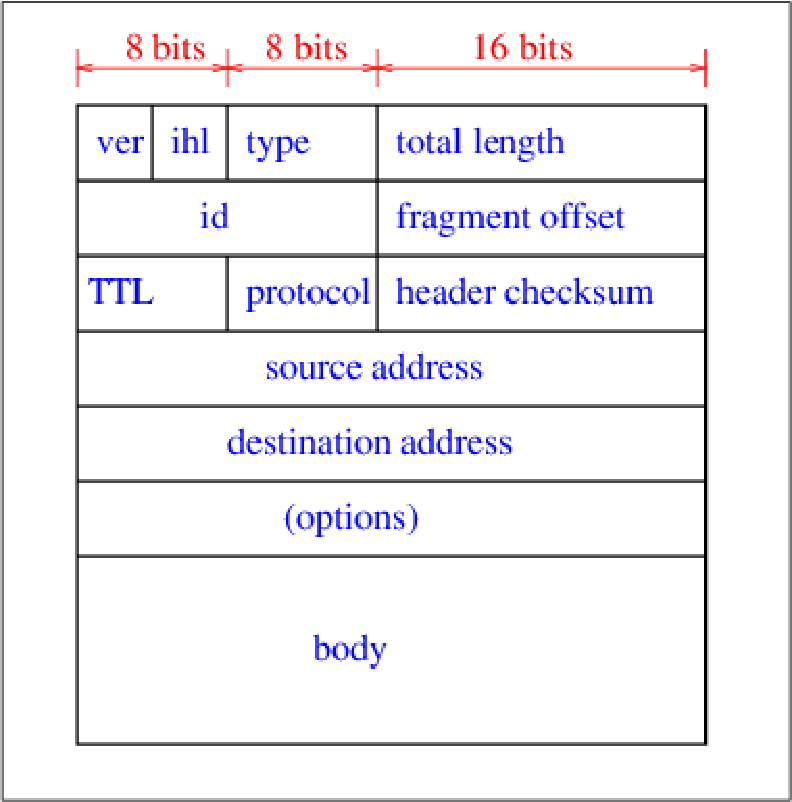
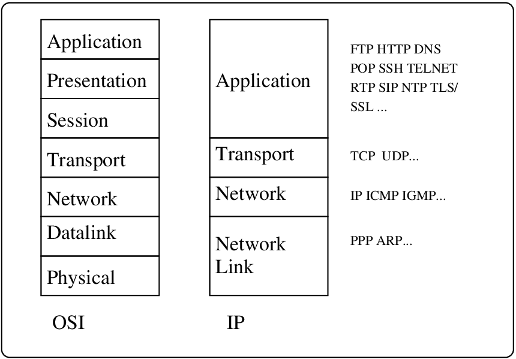
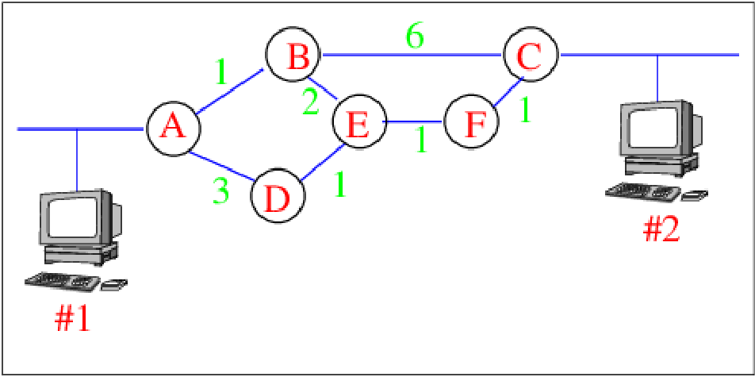
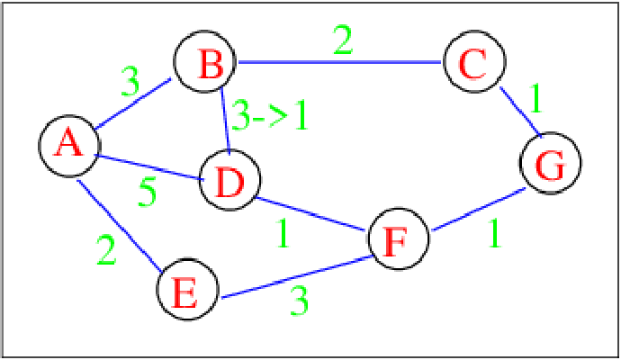
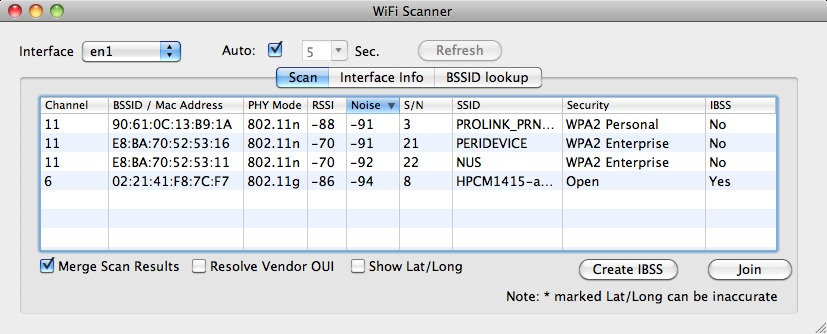
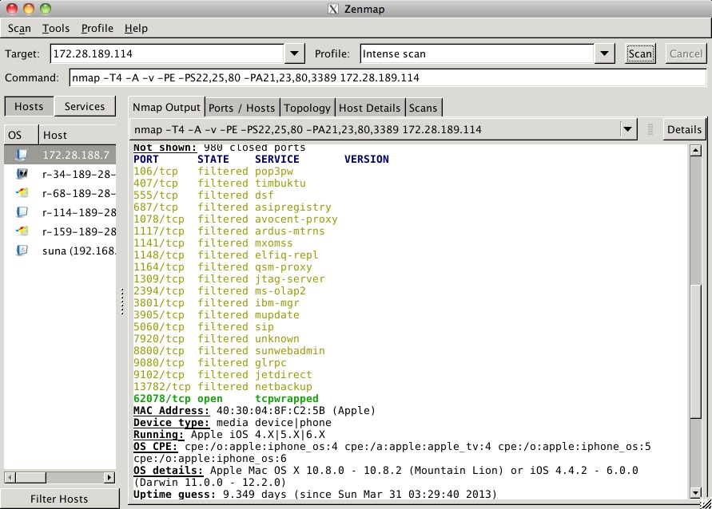
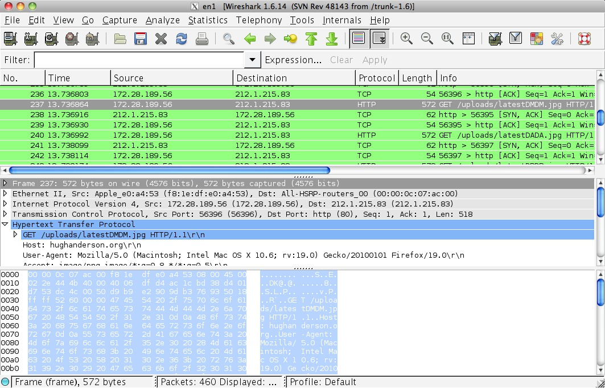
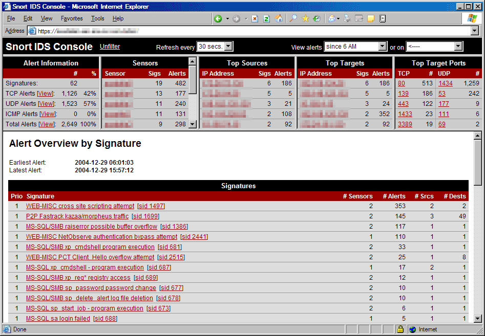

Intro
Modern computer systems are increasingly reliant on each other, and it is now normal for our computers to be networked to others in order to inter-operate. By far the most common base message transferring system is IP, the Internet Protocols. In this section we initially look at this base system, and then at higher-level systems built on top of IP. A simple model of networks (perhaps the Internet) goes something like this:
You have hosts, (PCs, servers...) connected to a great big cloud of interconnectivity ...
Sounds nice enough, but it turns out that the reality is a little different. There are logical networks, physical networks, networks built on networks, heirarchies, zones and so on.

Consider the two models above, the one on the left representing a very simple and abstract view - computers are all connected via the Internet; the one on the right showing various heirarchies of networks, with interconnecting “controlling” boxes - (the jargon word is routers). This interconnectivity diagram is just showing one type of connectivity - the physical connectivity. We also build other private networks on-top-of the physical connectivity network, and perhaps we may be interested in diagrams of these logical networks, and how they (logically) connect to each other.
The reason that more detailed models are interesting is that they can help us to control access to our machines. For example, on the right of the rightmost diagram, we see a server, and two PCs on one network, with a router controlling access to and from the Internet. In this case, the router could inhibit any other machine on the Internet from connecting to our three machines; unexpected messages (packets) coming from other machines on the Internet are blocked by the router. Also on the right-most diagram, we see a subnetwork labelled DMZ, the demilitarized zone. These machines might be the organization’s external web servers, that have to be accessable from the Internet. By configuring the routers, we ensure the least exposure of our organization’s machines to attackers from the Internet.
Routers themselves are just computers, running routing software that has some sort of configuration database. A network administrator tries to ensure that the router rules prevent unauthorized access to machines from hosts on the Internet, while still allowing connections from the local network(s).

A modern computer (inter)network consists of networks with locally attached host computers, interconnected by routers in an almost chaotic manner as seen above. Communications between host computers can follow many different paths through such a network, so that if some part of the wider network is not working for some reason, communication can be re-routed to follow some other path.
Each machine has a set of (IP) addresses. The addresses are just numbers identifying the particular interface on each computer. When computers transfer messages to other computers, we add addressing and other information to each message to help route messages through the wider network.

We call the little messages with routing information packets, visualized above. A big message (say an email) may be sent in lots of these little packets, which have a header at the beginning containing the routing information. An important point about this is that there are many ways to change or modify the content of the messages, and the extra added routing information.
IP mechanisms, addressing and layers
IP[^1] is perhaps the most widely distributed network layer protocol. It belongs to a set of protocols, called IP, developed over the last 25 years. Initially the IP suite was developed for the US military as a research project into fault[^2] tolerant networks. The protocols cover from network to application layers, and are continually being developed. IPv6 is a development of IP, giving a larger address space, and support for alternative carriers.
IP is documented in a set of documents called the RFCs[^3]. There is an RFC for every protocol in the IP suite. An RFC is initiated by anyone who wishes to specify a new protocol and they are commented on/vetted/improved by the internet community before final distribution.
The IP network layer addressing scheme uses four bytes[^4], and is often written as dotted decimal, or hex numbers:
| Decimal | Hex |
|---|---|
| 156.59.209.1 | 9C.3B.D1.01 |
This address defines an interface not a host. - a host may have one, two or more interfaces, each with different IP network layer addresses[^5].
-
Each interface has at least one unique address.
-
Machines on the same network have similar addresses.
-
For every interface on an IP network, you have not only the IP address but also a mask, which defines the network part of the address.
An IP network mask looks like an address, but the meaning of the bits are different. In a network mask, the bits identify the network and host parts of the address:
-
If the bit is a 1, it is part of the network address.
-
If the bit is a 0, it is part of the host address.
For example:
Address: 156.59.209.1
-> 10011100 00111011 11010001 00000001
Network Mask: 255.255.252.0
-> 11111111 11111111 11111100 00000000
(AND)
Host part: 01 00000001
Network part: 10011100 00111011 11010000 00000000
-> 156.59.208.0
The host is 156.59.209.1 on network 156.59.208.0, with a network mask of 255.255.252.0.
Machines can determine if they are on the same network by ANDing their host address with the network mask. If the resultant network addresses are the same, the two hosts are on the same network. Choosing an incorrect mask can result in confusion.
Two special addresses are reserved on any IP network: the one with the host part all 0s, and the one with the host part all 1s. You cannot allocate these addresses to machines. They are used for broadcasting to all machines on the same network.

The figure above shows the structure of an IP packet. The ’ihl’ field gives the header length in 32 bit chunks. Notice that our IP addresses fit into the 32 bit source and destination address fields.
The ’TTL’ field gives the time to live for the packet. Each time the packet passes through a router, it is decremented by 1. If TTL reaches zero, the router sends the packet back to the source address. This has two uses:
-
You won’t get a packet looping forever.
-
You can test reachability by artificially setting the TTL.
Worldwide, there are five classes of IP address ranges:
| Class | Who for | Prefix | Size | Number |
|---|---|---|---|---|
| A | Huge organization | 0xxxxx... | \(2^{24}\) | \(2^{7}\) |
| B | Large organization | 10xxxx... | \(2^{16}\) | \(2^{14}\) |
| C | Small organization | 110xxx... | \(2^{8}\) | \(2^{21}\) |
| D | Multicast | 1110xx... | 1 | \(2^{28}\) |
| E | Reserved | 11110x... | 1 | \(2^{27}\) |
Note:
there is no way to ask for a single organizational IP address, and this
accounts for the unfortunate situation we are getting to - nearly all
the IP addresses have been allocated!
There are some solutions to the IP address space problem:
-
Private IP addresses - accessable via a gateway.
-
IPv6 - has a 16 byte address space.
-
Reuse of addresses in remote regions, with router support.
Layers

This model provides a framework to hang your understanding of computer networking on.
The protocol specifies how communication is performed with the layer at the same level in the other computer. This does not for instance mean that the network layer directly communicates with the network layer in the other computer, instead each layer uses the services provided by the layer below it, and provides services to the layer above it.
The definition of services between adjacent layers is called an interface.
Computers on a network often need to translate from one layer to another layer, for example between network and network link addresses.
An example
If a machine knows the network address of a machine it wishes to transmit to, it can find out if the other machine belongs to the same network. If it does, the machine needs to find out the datalink address of the other machine, so that it can directly send the message.
The protocol to do this is called ARP[^6].
ARP
An ARP request for the specified network address is sent to the datalink broadcast address. Machines that know the translation between the network and datalink address respond with an ARP response, containing the datalink address for the specified network interface.
Machines normally maintain ARP tables containing results of recent ARP requests. You may query these tables using the arp command:
opo 30% arp -a
manu.usp.ac.fj (144.120.8.10) at 0:0:f8:5:6a:a1
kula.usp.ac.fj (144.120.8.11) at aa:0:4:0:b:4
teri.usp.ac.fj (144.120.8.1) at 0:0:f8:31:1c:da
? (144.120.8.125) at aa:0:4:0:32:5
? (144.120.8.251) at aa:0:4:0:7f:6
opo 31%
Routing
The particular routing scheme used by the network layer is normally hidden from the network layer user. However there are two main schemes used internally:
-
Fixed routing computed at connect time
-
Individual packet routing done dynamically
If you have a group of networks connected by routers, we have to distribute routing information. RIP is one such router protocol. Routers listen for, and broadcast RIP[^7] packets out all interfaces. In this way, the routers can learn about adjacent networks. You can query the state of routing tables on most routers. The structure of IP subnetting minimizes the number of routes that a router has to keep track of. It is common for smaller machines to be given a default route (or gateway) rather than letting them sort it out using RIP.
There are other protocols for routing, such as IGRP - the Internet Gateway Routing Protocol.
There are many routing algorithms, and we will just look at a few.
Static or fixed routing
We might use a technique such as the shortest path - here a path could be how long or how many hops or some other metric.

If hops were used for our metric, ABC is the shortest path from machine #1 to machine #2. However, if delay was used, and AB=1, AD=3, BE=2, DE=1, EF=1, BC=6 and FC=1, then the metric attached to ABC is 7 and ABEFC is only 5.
In the above simple example, we could use fixed tables, and preload each router from these tables.
There are various algorithms involving walks through the network which calculate the shortest path through a network, but you should note that static routing will not respond to changes in the network.
Dynamic routing
One common method used to dynamically find effective routes is the ’distance vector’ scheme, used by RIP.
In distance vector routing, each router maintains a table of distances to all other routers indexed by router number. Periodically, attached routers exchange information about their tables.
In the following diagram, we have an internetwork with seven routers. The figures represent the metrics attached to each route, and note that the route BD is about to change from a metric of 3 (meaning not so good) to 1 (meaning good).

Before the change, router D has the following table, giving it’s view of the best routes:
| Destination | Delay | Route |
|---|---|---|
| A | 5 | A |
| B | 3 | B |
| C | 3 | F |
| D | 0 | - |
| E | 4 | F |
| F | 1 | F |
| G | 2 | F |
Router B then sends to D it’s version of the router table:
| Destination | Delay | Route |
|---|---|---|
| A | 3 | A |
| B | 0 | - |
| C | 2 | C |
| D | 1 | D |
| E | 5 | A |
| F | 2 | D |
| G | 3 | C |
Router D then rewrites it’s table to reflect the new information:
| Destination | Delay | Route |
|---|---|---|
| A | 4 | B |
| B | 1 | B |
| C | 3 | F |
| D | 0 | - |
| E | 4 | F |
| F | 1 | F |
| G | 2 | F |
Router D can determine from router B’s information that there is a better route to router A than the direct one. This algorithm responds to good news quickly and bad news slowly[^8].
IP spoofing
IP spoofing refers to computer attacks where a hacker writes a program, which sends IP packets that have falsified from addresses in the packet header, instead of the hacker’s IP address. The intent of this is to convince the attacked computer that the IP packets come from a trusted host, when in fact they come from Harry-the-hacker.
In many IP spoofing attacks, Harry will be unable to see the replies from the attacked computer, because they are sent to the trusted host, and not Harry’s machine. This introduces a problem, because each sequence uses some set of sequence numbers, and Harry will not be able to see the sequence number used by the attacked computer, and hence have difficulty forging his messages. However, many older operating systems have poor algorithms for choosing sequence numbers, and with some knowledge of the attacked computer it is often possible to generate correct sequence numbers.
IP spoofing attacks from outside are generally inhibited by care in the routers that border the Internet. These routers can be set to restrict the input to your external interface by not allowing a packet through if it has a source address from your internal network. This prevents packets originating within your network from pretending to be from outside your network.
In addition, you can filter outgoing packets that have a source address different from your internal network to prevent a source IP spoofing attack from originating from your site.
These filters will not stop all attacks, since outside attackers can spoof packets from any outside network, and internal attackers can still send attacks spoofing internal addresses.
Diagnostic tools
Some very basic tools:
-
Arp - indicates datalink and (IP) network addresses observed on a network.
-
Ping - a network-layer aware echo request program (IP).
-
Wireshark - tools to capture and display frames on your network.
Tools that capture frames must put the ethernet card in a promiscuous mode. In this mode they will capture all frames - not just broadcasts and those addressed to your machine. In addition, some ethernet cards discard bad frames without telling you (i.e. no interrupts). This can lead you to think there are no bad frames on your ethernet.
Tool support - seeing is believing
In the diagrams, we use black lines indicating physical connections, and an assumption is that (for example) the DMZ and intranet are disjoint - packets on the DMZ network are not found on the intranet network and vice versa. Unfortunately, wifi networks have somewhat arbitrary connectivity. Your home Starhub-provided wifi network is accessable certainly in your neighbour’s apartments, and with a special antenna, it can be accessed from over a kilometre away.
To reduce the danger of this, wifi networks are routinely encrypted with various levels of encryption. You can think of this as building a network on top of a network - an encrypted network on top of an unencrypted medium. Note that if you now access your favourite protected web site https://my.favourite.site/, the packets are now encrypted twice; firstly by the browser when using the key for the SSL connection, and secondly the packets encrypted by the wifi networking software on your computer or the router.
You should be aware that many attacks have succeeded against protected wifi networks; the early WEP encryption scheme takes only a very short time to attack, and WPA schemes succumb to dictionary attacks if you have picked too short a passphrase.
There are many tools specific to hackers, such as ones for bruteforcing network credentials (aircrack for example), but here we just concern ourselves with ones for us white-hat people :) - a range of tools that can be used to help us monitor, configure or test networks. The following examples are just the tip of the iceberg (yet again).
We start with a useful tool for finding out about wifi networks around us. We may only have passwords and login details for a very specific wifi network (say NUS), but other networks can be found easily using wifi scanner (discovery) tools. On my mac I have one called WiFi Scanner.

Here, the Wifi Scanner shows details about four different logical networks that it found nearby, indicating the signal strength, the type of security, the radio transmission channel and so on. This information is vital for you to know, before an attacker learns it! Remember that an attacker only needs to be within one kilometre, and they will be able to see this sort of information.
Another useful tool is nmap. This tool is used to test what sort of networking connections could be made to a computer, and can also attempt to discover the type of computer and OS.

Here, nmap has found a large number of open ports and identified (correctly) the OS on my iPad. This is of concern if I was concerned about security on my iPad. Which I am not. But what are all these open services/ports? What attacks are known for these services/ports on this particular OS?
Another tool can be used to record and explore network traffic, not just to and from our machine, but perhaps from some neighbouring wifi machine to and from some other machine. A tool to do this is Wireshark.

Here, wireshark has recorded a large number of wifi packets. The main display window has three regions: the top region shows a list of packets, the bottom region shows the actual bytes in the packet, and the middle region shows the packet broken down by protocol layer.
The tools shown in the previous section provide basic network testing and monitoring facilities. In addition to these basic tools, we may be interested in IDS - Intrusion Detection Systems. These systems are based on software which continuously records all the traffic on a network segment, and then looks for patterns that indicate an intrusion.

Here we see the Snort interface, showing a summary of alerts, indicating their importance and type.
Defences...
Vigilance, standards, use of standard APIs etc
[^1]: Internet Protocol
[^2]: The fault the US military was concerned with could tactfully be called a ’nuclear’ issue...
[^3]: Request for Comments.
[^4]: Four bytes will allow over 4,000,000,000 different machine addresses, and this was considered adequate 25 years ago. However a wasteful allocation scheme has resulted in much of this address space being used up.
[^5]: The IP network layer address is often called the ’IP address’.
[^6]: Address Resolution Protocol.
[^7]: Routing Information Protocol.
[^8]: The problem here is commonly known as the count-to-infinity problem. The routers slowly add to their metrics for the bad path - each router thinking it has a slightly better path through another misinformed router.